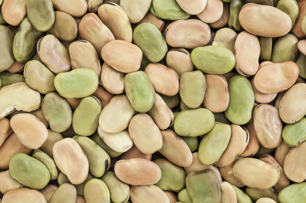

Як обирати продукти?

ЗЕРНОВІ
Цільні зерна
Обирайте продукти з цільнозернового борошна. Вони багаті на волокна, стимулюють травлення та підвищують ситість.

СВІЖІСТЬ
Овочі та фрукти
Вживайте їх свіжими. Це натуральне джерело вітамінів та складних вуглеводів.

ОБМЕЖЕННЯ
Менше цукру
Уникайте оброблених продуктів. Надлишок цукру веде до ожиріння та діабету.

СИЛА
Бобові
Включайте в раціон бобові. Це комбінація рослинного білка та складних вуглеводів для тривалої ситості.